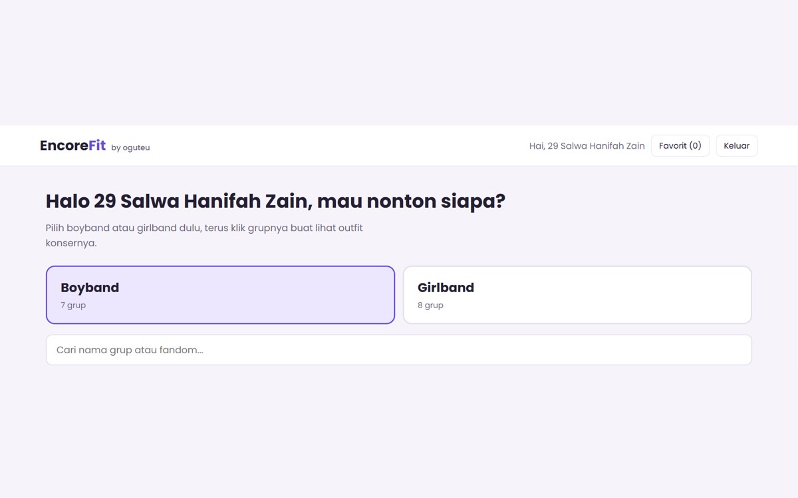

Encorefit by Oguteu
Web Development
Encorefit by Oguteu
Website inspirasi outfit untuk menonton konser K-Pop. Pengguna login, memilih boyband atau girlband, lalu mendapat rekomendasi outfit sesuai warna fandom, bisa mix outfit sendiri, dan menyimpannya ke favorit.
Tools: HTML, CSS, JavaScript, Netlify